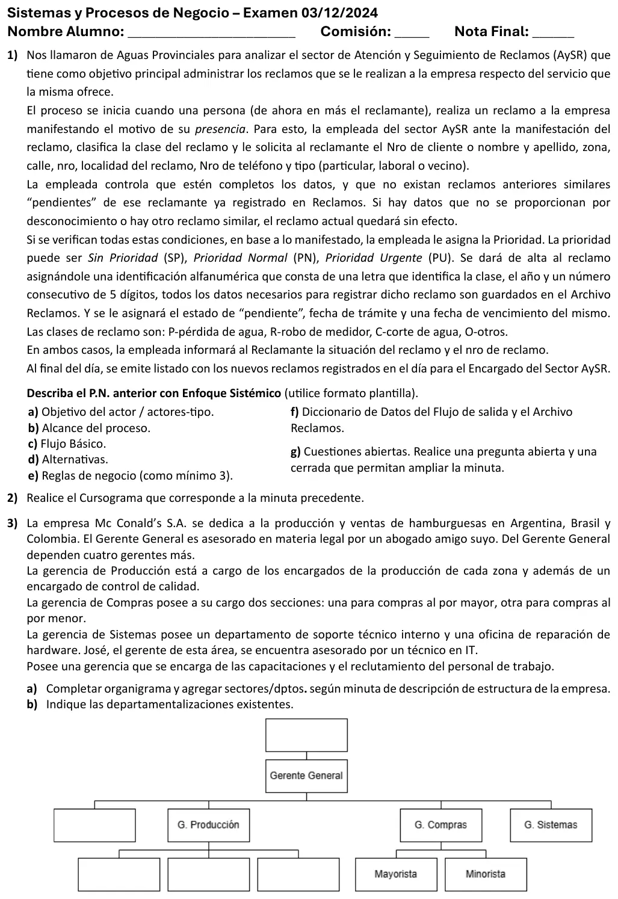
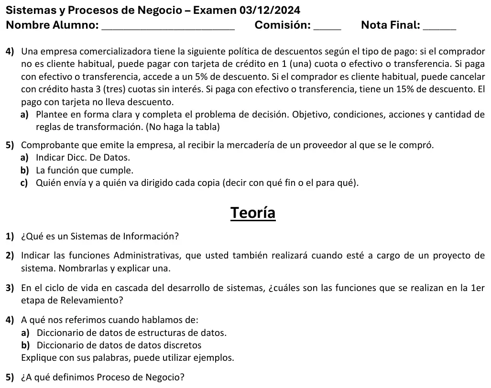

Final, 03/12/2024
Final, 03/12/2024
Enunciado




Preguntas con opciones
Salen de este examen, algunas adaptadas. Dejalas para el final, porque las opciones pueden dar pistas.
- 1
¿Cuál es uno de los objetivos del relevamiento según el apunte?
Se tomó: Final 03/12/24, adaptada
Entre los cinco objetivos están identificar el sistema y los usuarios responsables, identificar las deficiencias del sistema actual, fijar metas, ver la factibilidad y planificar las etapas siguientes. Programar, probar e instalar son etapas posteriores.
- 2
El actor que proporciona un servicio al proceso, y puede ser una persona, una organización o un sistema informático, es el actor
Se tomó: Final 03/12/24, adaptada
Es el actor de apoyo. El principal es el dueño del objetivo y el pasivo está interesado en el comportamiento del caso de uso, pero no es principal ni de apoyo.
- 3
Un proceso de negocio es
Se tomó: Final 03/12/24
Tiene entradas, funciones y salidas. La tercera es la definición de sistema de información y la cuarta describe una tabla de decisión.
- 4
Un sistema de información es
Se tomó: Final 03/12/24
Reúne, procesa, almacena y distribuye información para apoyar la toma de decisiones y el control en una organización. La tercera opción es la definición de proceso de negocio.
- 5
En el diccionario de datos, un dato que se marca (D) y se describe con una tabla de atributo, descripción y valores posibles, como el tipo de cuenta, es un dato
Se tomó: Final 03/12/24, adaptada
Es un dato discreto y se marca (D). La estructura (e) es un conjunto de datos elementales, como la dirección.
- 6
Según el apunte, ¿por qué se considera a la planificación la función administrativa prioritaria?
Se tomó: Final 03/12/24, adaptada
Sin planes no hay metas contra las cuales organizar los recursos, dirigir a las personas o controlar resultados.
Propuesta de respuesta
Respuesta no verificada. La propuso Luta Studios con inteligencia artificial y ningún docente la revisó. Puede tener errores.
Ejercicio 1. Proceso de negocio con enfoque sistémico
Proceso de negocio. Atención de reclamos del servicio.
Objetivo del actor. El reclamante quiere que la empresa registre su reclamo sobre el servicio y le dé un número para seguirlo.
Actores.
- Principal. El reclamante.
- De apoyo. La empleada del sector AySR.
- Pasivo. El Encargado del Sector AySR, que recibe el listado del día.
Alcance del proceso. Desde que el reclamante realiza el reclamo hasta que se emite el listado de los reclamos nuevos del día para el Encargado del Sector AySR.
Evento externo iniciador. El reclamante realiza un reclamo a la empresa por el servicio.
Flujo básico.
- El Reclamante manifiesta el motivo de su reclamo a la Empleada.
- La Empleada clasifica la clase del reclamo.
- La Empleada solicita al Reclamante el número de cliente o su nombre y apellido, la zona, calle, número y localidad del reclamo, y el número y tipo de teléfono.
- El Reclamante informa sus datos a la Empleada.
- La Empleada controla que los datos estén completos.
- La Empleada controla en el archivo Reclamos que no existan reclamos similares pendientes del Reclamante.
- La Empleada asigna la prioridad del reclamo.
- La Empleada da de alta el reclamo en el archivo Reclamos, con su identificación, el estado «pendiente», la fecha de trámite y la fecha de vencimiento.
- La Empleada informa al Reclamante la situación y el número del reclamo.
- La Empleada emite al final del día el listado de los reclamos nuevos para el Encargado del Sector AySR.
Alternativas.
- Paso 5. El Reclamante no proporciona un dato porque no lo conoce. El reclamo queda sin efecto y la Empleada le informa la situación al Reclamante.
- Paso 6. Existe un reclamo similar pendiente del Reclamante. El reclamo queda sin efecto y la Empleada le informa la situación al Reclamante.
Reglas de negocio.
| Regla | Tipo |
|---|---|
| Un reclamo con datos incompletos no se registra y queda sin efecto | AR |
| No se registra un reclamo si el reclamante tiene otro similar pendiente | AR |
| La identificación del reclamo es la letra de la clase, el año y un número consecutivo de 5 dígitos | CA |
| Todo reclamo nuevo se registra con estado «pendiente» | HE |
| La prioridad de un reclamo es SP, PN o PU | HE |
| Al final del día se emite el listado de los reclamos registrados en el día | AD |
Diccionario de datos.
Flujos de datos de salida
S1 inform-reclamo = [ nro-reclamo(e) + estado(D) + fecha-vencimiento | situación ]
S2 listado-reclamos-día = fecha + 1{ nro-reclamo(e) + clase(D) + prioridad(D)
+ datos-reclamante(e) + ubicación(e) + fecha-vencimiento }N
+ cantidad-reclamos
Entidad
Reclamos = nro-reclamo(e) + clase(D) + datos-reclamante(e) + ubicación(e) + teléfono(e)
+ motivo + prioridad(D) + estado(D) + fecha-trámite + fecha-vencimiento
Estructuras de datos
nro-reclamo(e) = letra-clase + año + nro-consecutivo ** 5 dígitos **
datos-reclamante(e) = [ nro-cliente | nombre + apellido ]
ubicación(e) = zona + calle + nro + localidad
teléfono(e) = nro-teléfono + tipo-teléfono(D)
Elementos de datos discretos
Atributo: clase (D)
Descripción: Clase del reclamo
Valores posibles: P pérdida de agua, R robo de medidor, C corte de agua, O otros
Atributo: prioridad (D)
Descripción: Prioridad del reclamo
Valores posibles: SP sin prioridad, PN prioridad normal, PU prioridad urgente
Atributo: tipo-teléfono (D)
Descripción: De quién es el teléfono
Valores posibles: Particular, laboral, vecino
Atributo: estado (D)
Descripción: Estado del reclamo
Valores posibles: Pendiente, los demás no los da la minutaCuestiones abiertas.
- Abierta, al Encargado del Sector AySR. ¿Qué pasa con un reclamo después de que queda registrado como pendiente?
- Cerrada, a la Empleada. ¿La fecha de vencimiento depende de la prioridad del reclamo?
Ejercicio 2. Cursograma
Tocá el dibujo para verlo en pantalla completa.
Ejercicio 3. Organigrama
El recuadro de arriba del Gerente General va como Directorio, porque es una sociedad anónima. El que falta al lado de Producción es la gerencia de las capacitaciones y el reclutamiento, Recursos Humanos. Se agrega Control de calidad debajo de Producción.
Tocá el dibujo para verlo en pantalla completa.
| Dónde | Qué agrupa | Tipo |
|---|---|---|
| Gerente General | Recursos Humanos, Producción, Compras y Sistemas | Por funciones |
| Producción | La producción de Argentina, Brasil y Colombia | Por área geográfica |
| Producción | Control de calidad, al lado de las zonas | Por funciones |
| Compras | Mayorista y Minorista | Por tipo de mercado |
| Sistemas | Soporte técnico interno y Reparación de hardware | Por funciones |
Ejercicio 4. Decisión programada
Objetivo. Determinar el descuento y las cuotas que corresponden a cada compra según el tipo de comprador y el medio de pago.
| Condición | Valores | |
|---|---|---|
C1 | ¿El comprador es cliente habitual? | S, N |
C2 | ¿Paga con efectivo o transferencia? (si no, con tarjeta de crédito) | S, N |
| Acción | |
|---|---|
A1 | Aplicar un 5 % de descuento |
A2 | Aplicar un 15 % de descuento |
A3 | No aplicar descuento |
A4 | Cobrar con tarjeta de crédito en 1 cuota |
A5 | Cobrar con crédito en hasta 3 cuotas sin interés |
Reglas de transformación. .
Ejercicio 5. Nota de recepción
a) Diccionario de datos.
nota-recepción = nro-NR + fecha + datos-proveedor(e) + nro-OC + nro-remito
+ 1{ cod-artículo + descripción + cantidad-recibida + precio-unitario }N
+ importe-bruto + (bonificación) + firma-recepción
datos-proveedor(e) = razón-social + CUIT + domiciliob) Función. Es la constancia de que lo adquirido llegó. Se firma por cantidad y calidad. Es un comprobante prenumerado y exclusivamente interno.
c) Copias. Las envía Recepción, que la confecciona con su ejemplar del remito y una copia de la orden de compra.
| Copia | Va a | Para qué |
|---|---|---|
| Original | Almacenes, con la mercadería | Controlarla, almacenarla y registrar el ingreso físico |
| Duplicado | Compras | Controlarla con la factura y las notas del proveedor y armar el legajo de compra |
| Triplicado | Contaduría, en el legajo de compra | Registrar la compra |
Teoría
1. Sistema de información. Un conjunto de componentes interrelacionados que reúne (u obtiene), procesa, almacena y distribuye información para apoyar a la toma de decisiones y el control en una organización.
2. Funciones administrativas. Planificación, organización, dirección y control. La planificación es establecer metas y un curso de acción adecuado para alcanzarlas. En un proyecto de sistemas es fijar los objetivos y los planes del proyecto. Es la función prioritaria, porque sin ella no tienen sentido las otras.
3. Funciones del relevamiento. Identificar el sistema y los usuarios responsables. Identificar las deficiencias del sistema actual. Establecer metas y objetivos para el sistema nuevo, que los da el usuario. Determinar si es factible, con estimaciones de costo, tiempo y beneficios. Planificar las etapas siguientes del proyecto.
4. Estructuras y datos discretos. Una estructura de datos junta dos o más componentes, cada uno un dato u otra estructura, y se marca (e). Por ejemplo, domicilio(e) = calle + número + piso + depto + ciudad + provincia. Un dato discreto toma uno de una lista cerrada de valores. Se marca (D) y se describe con su atributo, su descripción y sus valores posibles, como tipo-cta (D), que puede ser cuenta corriente, caja de ahorro o plazo fijo.
5. Proceso de negocio. Un conjunto de tareas relacionadas lógicamente, llevadas a cabo para lograr un resultado de negocio definido. Cada proceso tiene entradas, funciones y salidas.
Respuesta no verificada. Puede tener errores.
Se armó con la página del 2° parcial (plantilla de enfoque sistémico, flujo básico, reglas de negocio, diccionario de datos, cuestiones abiertas, símbolos y reglas del cursograma), la del 1° parcial (organigrama, departamentalización, asesores y procedimiento de compras), la del 3° parcial (cómo plantear el problema de decisión) y la del final.
Quedó en duda: El recuadro vacío de arriba del Gerente General no tiene texto en la minuta, y va como Directorio por ser una S.A. Ninguna página dice cómo se dibujan los asesores. Compras al por mayor y al por menor podría ser también por tipo de cliente. En el cursograma, la página no muestra cómo se dibuja un archivo digital ni cómo se graba en él, y acá se graba con una flecha punteada hacia el archivo. El estado del reclamo solo tiene un valor en la minuta. La minuta no dice cuántas copias tiene la nota de recepción ni si Recepción se queda con una. En la decisión, si se separan efectivo y transferencia, la condición del pago tiene 3 valores y serían 6 reglas. En el objetivo, las páginas dejan abierto si admite «calcular».
¿Cómo te fue?
Marcá cada tema del examen. Las preguntas con opciones ya se corrigieron solas.
- Enfoque sistémicoEl proceso de negocio con enfoque sistémico, en 2° parcial
- CursogramaSímbolos, en 2° parcial
- OrganigramaEl organigrama, en 1° parcial
- Decisión programadaDecisiones programadas y no programadas, en 3° parcial
- ComprobantesClasificación de los comprobantes, en 1° parcial
- TeoríaPreguntas de teoría con respuesta en el apunte, en 1° parcial